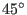

Next: The Geometric Product Up: Vector Spaces Previous: Bases, Linear Independence, Matrix Contents Index
If we had a friend who is blind-folded, standing in a field some distance from an apple tree, we can give directions to them on how to find the tree. We know which is north and south, but this information would be useless to them. We cannot give them directions on how to move based on compass points and the length of our strides. We cannot say Take five steps north-east, for instance. Those would be our coordinates. Knowing the length of their stride, we can transform our coordinates into coordinates which they can follow. For example, if we noticed that they are facing north-east, and the apple tree is directly north of them, we can tell them to turn left (their left)  and then walk so many paces (their paces). This is a very simple analogy of what controllers of spacecraft and other remote vehicles do.
We will endeavor to show how to specify coordinates in a mathematical way using basis vectors. We will then show how to give these coordinates in terms of a different basis. In a later section on applications, we will use this method for solving more serious problems than how to get a blind-folded friend to an apple tree (while avoiding any cow pats, naturally).
If the set of vectors
 form a basis for a vector space
form a basis for a vector space  over a field
over a field
 , then
any vector
, then
any vector  in
in  can be written as a linear combination of these basis vectors
can be written as a linear combination of these basis vectors
for exactly one set of scalars